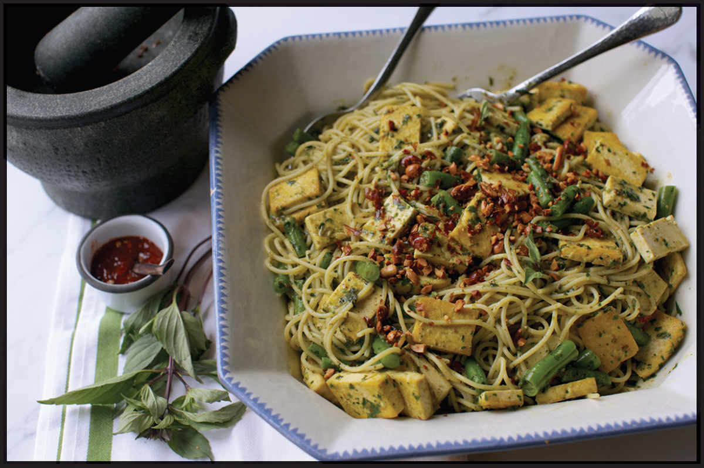

NOODLES WITH THAI BASIL AND PEANUT PESTO
|
Yield Serves 4 |
Active Time 15 minutes Total Time 15 minutes |
For best results, follow the recipe as written, using a heavy mortar and pestle. If you’re in a hurry, you can also use the food processor. If using the food processor, freeze the garlic, ginger, chiles, basil leaves, and cilantro leaves on a rimmed baking sheet for 15 minutes to help rupture their cell structure, allow to thaw at room temperature for a few minutes, then grind in the food processor along with the peanuts, drizzling in olive oil with the machine running until a smooth sauce is formed. Instead of tofu, you can add a cup of shredded leftover roast chicken, rotisserie chicken, or poached chicken.
If you’ve been reading this book from the beginning, you should be aware by now that the mortar and pestle is my favorite tool in the kitchen. There’s nothing better for crushing aromatics, grinding spices, or making flavorful pastes and sauces. I love it so much that it seemed almost a shame not to include a recipe for Ligurian pesto. Italian pesto made in a mortar and pestle has a creamy texture and intense flavor that simply cannot be matched by a food processor or blender (read more about why in “The Mortar and Pestle Is the Most Underrated Tool in Your Kitchen” on here).
This got me thinking: What would happen if I replaced standard Ligurian pesto ingredients—Italian sweet basil, garlic, pine nuts, Parmesan cheese, and olive oil—with some common Thai ingredients instead? It wouldn’t be so different from a curry paste after all. I quickly discovered the answer to that question by pounding together Thai basil and cilantro, garlic and ginger, fried peanuts, fish sauce, olive oil, and some hot chiles. The answer was simple and delicious.
As with San Francisco–Style Vietnamese American Garlic Noodles (here), I prefer to use dry Italian pasta for this dish instead of Asian noodles (though they will work just fine). Unlike a typical Thai curry paste, which is fried to bloom its flavors before incorporating into a stir-fry or curry, this pesto works best when treated just like Italian pesto: don’t cook it at all after pounding it. Instead, toss it straight in the serving bowl with hot pasta, adding just enough pasta water to form a smooth, creamy sauce. In Liguria, it’s common to toss some blanched green beans and potatoes directly with the pasta and pesto. In my recipe, I keep the green beans and swap out the potatoes for panfried firm tofu. (Shredded chicken or nothing at all also works.)

INGREDIENTS
For the Pesto:
3 medium garlic cloves, roughly chopped (about 1 tablespoon/8 g)
One ¼-inch slice fresh ginger, peeled
1 fresh hot green chile, such as jalapeño, serrano, or Thai bird, roughly chopped
Kosher salt
¼ cup (40 g) roasted peanuts or Fried Peanuts (here), plus some extra crushed peanuts for garnish
2 ounces (about 2 cups) fresh Thai or sweet basil leaves
1 ounce (about 1 cup) fresh cilantro leaves and fine stems
1 tablespoon (15 ml) fish sauce, plus more to taste
1 tablespoon (15 ml) prepared chile sauce, such as sambal oelek or sriracha (optional)
½ cup (120 ml) extra virgin olive oil
For the Tofu (optional):
8 to 12 ounces (225 to 340 g) extra-firm tofu, cut into ½- by ½- by 2-inch strips, pressed firmly between paper towels to dry off surface moisture
1 tablespoon (15 ml) peanut, rice bran, or other neutral oil
For the Noodles:
Kosher salt
1 pound (450 g) dry spaghetti
8 ounces (340 g) green beans or yard-long beans, trimmed and cut into 1½-inch segments
DIRECTIONS
1 For the Pesto (see Notes): In the bowl of a heavy granite mortar and pestle, combine the garlic, ginger, and chile with a large pinch of kosher salt. Pound until a paste is formed. Add the peanuts and pound until a sticky, slightly chunky paste is formed. Add the basil leaves a handful at a time, pounding until they are completely broken down. Continue with the cilantro leaves. Add the fish sauce and chile sauce and incorporate by grinding with a firm circular motion. Drizzle in the oil a bit at a time, working it into the pesto with the pestle until a creamy, emulsified sauce is formed. Season with salt to taste and set aside.
2 For the Tofu (optional): Heat a wok over high heat until lightly smoking. Add the oil and swirl to coat. Reduce the heat to medium. Add the tofu, spread it into a single layer (work in batches if necessary), and cook, occasionally shaking pan gently, until crisp on first side, about 3 minutes. Flip the tofu and continue cooking until the second side is crisp, about 3 minutes longer. Transfer the tofu to a large serving bowl.
3 For the Noodles: Bring 1½ inches of lightly salted water in a 12-inch skillet or sauté pan to a boil over high heat. Add the pasta, stir a few times to make sure it’s not clumping, and cook, stirring occasionally, until the noodles are perfectly al dente (taste one to make sure), about 1 minute less than the package directions instruct. Add the green beans during the last 3 minutes of cooking. Drain, reserving 1 cup of the cooking water.
4 Transfer the pasta and green beans to the bowl with the tofu. Scoop out the pesto and add it to the bowl along with a big splash of the reserved cooking water. Toss the noodles and the pesto, adding more water as necessary until a loose creamy sauce coats the noodles and beans. (The noodles should freely pull out of the bowl with chopsticks. If they come up in large clumps, add more cooking water.) Season with salt or more fish sauce to taste. Garnish with crushed peanuts and serve immediately.